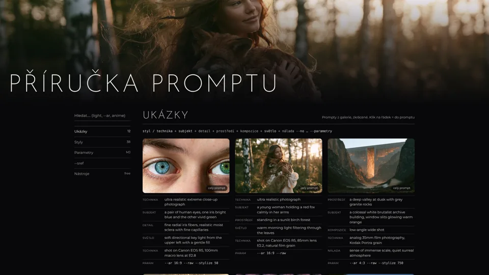

Školení
Prezentace a příručka
Kreativní AI
Jak tvořit s umělou inteligencí, od pixelu po obraz. Jak neuronka vidí obrázek, seed, formy AI, anatomie promptu a praktická část.
ČESKY · 20 SLIDŮ · MULTIMEDIÁLNÍ AI KROUŽEKAI v kanceláři
Co uleví, co zklame a co se stane bez jediného kliknutí. Copilot v praxi, třídy podkladů, asistent vs. workflow vs. agent a automatizace, která běží sama.
ČESKY · 20 SLIDŮ · KANCELÁŘ A ADMINISTRATIVA
The AI Frontier Effect
Scaling laws, agent horizons, inference economics and quantization. How fast the edge of AI spreads into cheaper models and real work.
ENGLISH · 9 SLIDES · LECTURE
Příručka promptu
Skutečné prompty z galerie rozebrané na díly, 38 stylů na kliknutí, parametry Midjourney a nástroje, které jdou zdarma.
ČESKY · INTERAKTIVNÍ PŘÍRUČKA · MIDJOURNEY A DALŠÍGalerie
MidjourneyKdyž si hraju s AI ;)